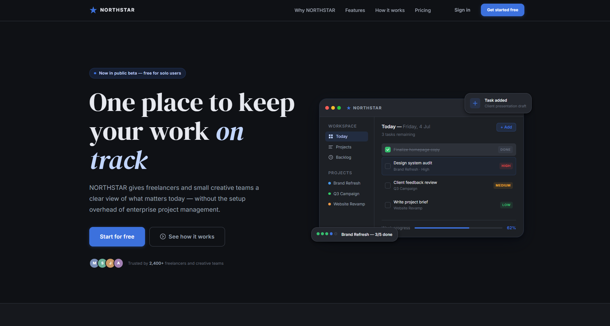
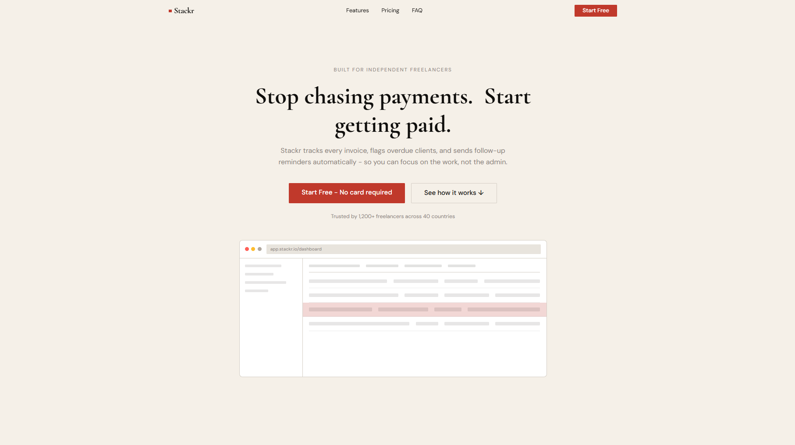
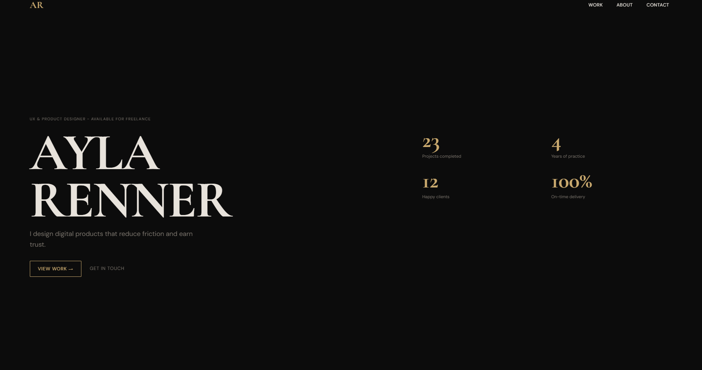

Northstar
Conversion-focused landing page for a fictional productivity tool. Dark theme, clean typography, clear product narrative.
View Live Site →
Stackr
Marketing page for a freelance payment tracking tool. Light, clean, approachable - typography carries the message.
View Live Site →
Ayla Renner
Minimal, editorial portfolio for a UX designer. Typography-led design with a restrained, refined visual language.
View Live Site →Landing Pages
Focused, responsive pages designed around a single goal - products, services, and ideas that need to convert.
Portfolio Websites
Clean personal and professional portfolio sites built to present creative work with clarity and visual intent.
Frontend & UI Improvements
Responsive fixes, interface refinements, and frontend implementation for existing websites and web apps.
Frontend-focused work only. Backend systems, authentication, databases, and payment integrations are outside the current service scope - which keeps projects focused, fast, and delivered on time.
Let's Work Together
Have a page
in mind?
Tell me what you need, what it's for, and when you need it. I'll take it from there.
Email Me